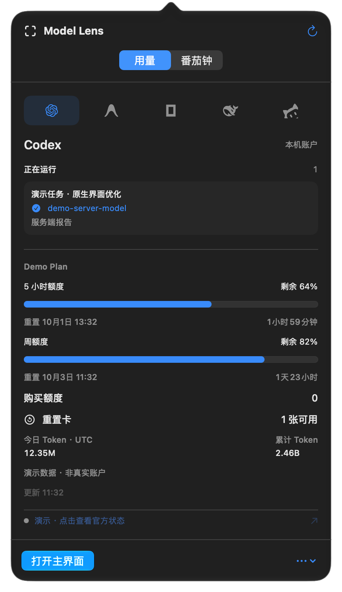

01 / 模型
请求了什么，
实际报告了什么。
读取 Codex 明确的模型响应字段、模型响应头与路由事件。每个任务、每一轮分别关联，保存来源、时间和请求标识。
轮次请求
了解模型检测 →demo-request-model服务端报告 demo-server-model演示字段 · 缺失信息保持未确认原生控件、系统蓝色、克制的 Liquid Glass。
默认只在菜单栏出现，需要时再打开工作区。
读取 Codex 明确的模型响应字段、模型响应头与路由事件。每个任务、每一轮分别关联，保存来源、时间和请求标识。
demo-request-model服务端报告 demo-server-model演示字段 · 缺失信息保持未确认套餐、剩余额度、重置时间、今日与累计 Token。购买额度与重置卡分开计量；积分和余额保留各自单位。
设置自己的专注与休息时长。菜单栏逐秒倒计时，支持暂停与恢复，到时提醒；休眠后根据真实截止时间校准。
当前与历史任务的模型证据、本地检测历史、JSON / CSV 导出、白名单证据导入。用量概览保留最近 90 天的成功快照。
额外账户的凭据保存在 macOS 钥匙串。服务状态位于对应平台底部；顶部一个刷新按钮更新任务、用量与状态。
事件驱动监听、增量扫描、按需网络读取。空闲番茄钟没有秒级计时器。没有遥测、广告和自动模型测试。
查看 Agent 进度，或把注意力交给番茄钟。
两项功能各自保留状态，彼此独立。
选择需要的平台，查看正在运行的 Codex 任务、额度窗口、Token 与重置卡。品牌图标统一为单色，选中时使用系统蓝色。

桌面 IPC 观察尚未写入文件的路由事件，文件扫描读取模型字段与请求诊断；采集模式为后续响应记录更多服务端模型信息。
没有路由事件，并不代表发生了错误。与请求相同的模型也可通过服务端字段确认；缺少字段时，应用不会把所选模型当作已交付模型。
关联任务与轮次，读取明确服务端模型事件；不靠时间接近来猜测。
保留来源、模型字段、请求 / 响应 ID 和时间，安全缓冲候选单独显示。
不从模型自述或回答质量猜身份；未公开和已丢失的历史字段无法补出。
字段取决于平台接口和客户端版本。
没有数据时显示未知，不换算、不填零。
任务模型证据、套餐、额度窗口、重置时间、Token、重置卡与购买额度。
官方客户端已登录；模型需要服务端明确字段。历史仅覆盖本机仍可访问的记录。
实际套餐、Gemini 与其他模型额度、重置时间。
已安装、登录的本机 Agent；当前接口没有 Token 总数。Google Cloud 状态仅作参考，不代表 Antigravity 状态。
官方额度窗口、工作区余额、本机最近 90 天 Token。
本机登录或 API Key；也支持手动工作区 Cookie。设备记录不等于全账户用量。
余额、充值余额与赠送余额。
需 API Key；余额接口不提供 Token 或重置。官方状态读取失败时保留未知并提供链接。
支持登录格式的剩余积分 / 重置，或本机已记录的积分消耗后备。
实验性。新版加密登录尚不能读取剩余余额，不解密认证；积分不能当作 Token。
独立核验、数据源设置与请求诊断位于 Codex 工作区；其他平台仅显示在菜单用量面板。所有平台可在设置中单独开启或关闭。
不能保证。只有客户端可访问的服务端模型字段和路由事件才能成为依据；没有字段时会保持未确认。采集模式可为后续响应增加记录，但不能恢复缺失历史或证明服务器上的模型权重。请阅读 README 中的检测边界与实测记录。
它们是不同计量项。购买额度余额与官方重置卡数量分开读取、显示。重置卡汇总是可用数量，详情列表可能省略或截断。软件只读取，不兑换或消耗你的重置卡。
应用运行只需 macOS 26 或更新系统与 Apple Silicon Mac，不需要 Homebrew、Python 或 Node。安装并登录对应 Agent 后读取本机支持的数据；DeepSeek 需 API Key。源码编译需要 Swift 6.2 与 macOS 26 SDK。
当前开源 Release 采用 ad-hoc 签名，未进行 Apple Developer ID 公证。请从官方仓库下载并核对 SHA-256，再按系统“隐私与安全性”的单应用提示允许打开；无需关闭整个系统的安全检查。
平台接口不一定提供这些信息。Antigravity 当前本机接口不提供 Token 总数，DeepSeek 余额也无法推算 Token。没有专属官方状态接口或读取失败时会显示未知，并提供相应参考网站。
原生、轻巧、免费开源。